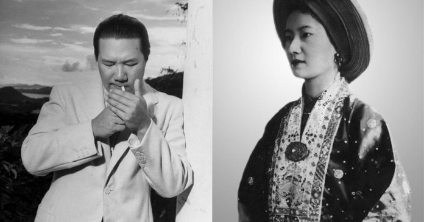
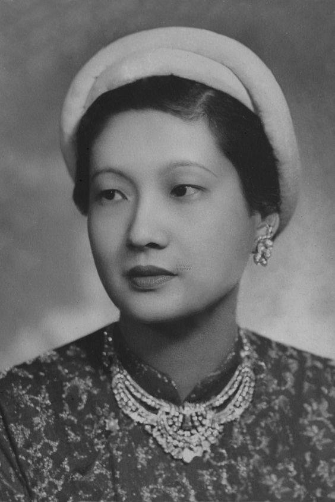

Chưa đầy hai tháng sau lễ tấn phong hoàng thái tử cho hoàng tử Bảo Long, Bảo Đại và Nam Phương quyết định qua thăm nước Pháp và cho ba con họ đi cùng. Đó là một chuyến đi dài ngày, hoàng tử và các công chúa rất thích thú.
Đã gần bảy năm xa cách nay hoàng hậu Nam Phương mới có dịp quay trở lại Pháp nhưng lần này bà đã là đệ nhất phu nhân của đất nước An Nam xa xôi chứ không còn là cô nữ sinh xinh đẹp, chăm chỉ suốt ngày trong trường dòng Les Oiseaux nữa. Bà tự hào, hãnh diện với đất nước của mình nên luôn động viên, khuyến khích ông trong công việc để không bị khiển trách dù chỉ là những điều nhỏ nhất. Những lúc nhà vua chán nản vì triều đình không được quyết định những việc lớn, ông bỏ đi săn nhiều ngày. Bà đã hết lời khuyên răn ông nên lo cho dân chúng và chỉnh đốn việc triều chính. Tuy nhiên, nền văn minh phương Tây và những nét hiện đại trong văn hóa của họ vẫn luôn là nỗi khát khao hàng ngày, niềm mơ ước hàng giờ mà bà muốn đem lại, soi sáng vào cuộc sống của người dân nước mình để họ có được sự kết hợp của hai nền văn hóa Đông-Tây.
Nay có dịp quay trở lại nơi đây, lòng bà không khỏi xốn xang. Lần đó vua Bảo Đại đi máy bay còn mấy mẹ con bà và đoàn tùy tùng đi bằng tàu biển.
Những ngày nắng đẹp, bà dẫn các con lên boong tàu, ngắm nhìn sóng biển. Xa xa chân trời thăm thẳm như nối liền với biển nước trong xanh, gợn sóng.
Mỗi khi tới một thành phố, tàu đều dừng lại. Những lúc đó, bà có dịp thả bộ ngắm nhìn người dân và các danh lam thắng cảnh, kiến trúc khác biệt với đất nước quê hương mình.
Khi đến Pháp, họ được đón tiếp rất trọng thể. Báo chí đưa tin, ca ngợi hết lời sắc đẹp của hoàng hậu Nam Phương: Vua An Nam và hoàng hậu sẽ đến Pháp, một bà hoàng trẻ và đẹp tuyệt trần...
Mặc dầu được cư xử như những người khách quý với những bữa tiệc linh đình kể cả bữa tiệc ở điện Elysée do tổng thống Albert Lebrun (người vừa được bầu lại vào ngày mồng 5 tháng 4 năm 1939) chủ tọa nhưng vua và hoàng hậu đều hiểu rằng họ chỉ là những người hữu danh vô thực, những người chỉ huy không có quyền hành trong tay. Vì vậy, họ cũng không tránh khỏi những suy tư.
Trong thời gian Bảo Đại làm việc ở Paris, Nam Phương tranh thủ đưa các con đi thăm thú các thắng cảnh thành phố ánh sáng nổi tiếng này. Nhưng vì các con bà còn quá bé nên chưa thể hiểu hết những gì bà muốn giới thiệu với chúng.
Sau thời gian làm việc, cả gia đình đến thành phố Cannes nơi có lâu đài Thorenc mà Bảo Đại vừa mới mua. Đó là một dinh cơ đẹp, là một trong những tòa nhà đẹp nhất ở bờ biển miền Nam nước Pháp.
Đến thành phố này Bảo Đại rất thích vì ở đây có đủ các hình thức giải trí đặc biệt là đi thuyền yatch. Nhiều lúc ông cho Bảo Long đi thuyền cùng với ông, dạy cho con cách điều khiển khiến Bảo Long vô cùng thích thú.
Lâu đài Thorenc nằm trong khu Terrefial, xung quanh cây cối tươi tốt, xanh um. Lâu đài này được xây dựng từ năm 1876, là chỗ ở của Richard Atwood Glasse và sau đó là Nam tước Montrose. Năm 1926, lâu đài được phá đi và xây thành hai biệt thự. Từ năm 1937 đến năm 1960, Bảo Đại là chủ sở hữu. Lâu đài Thorenc nằm trên một vùng đất đẹp lý tưởng của thành phố biển đẹp tuyệt vời phía nam nước Pháp. Nước biển xanh, trong vắt.
Cannes là một trong những thành phố nằm giữa hai thành phố nổi tiếng và tuyệt đẹp của Pháp trên vùng Côte d’Azur là Saint Tropez và Nice. Ngày nay, thành phố này nổi tiếng khắp thế giới là thành phố điện ảnh. Xung quanh vịnh là những bãi biển cát mịn đẹp lộng lẫy, những cây cọ có đến hàng trăm năm tuổi. Ở đây có đủ các nhà hàng, khách sạn sang trọng, các sân chơi tennis, gôn, các cửa hàng gồm các loại hàng, sản phẩm đắt tiền, các sòng bạc, các tàu thủy...
Lần này được đến nơi đây, Bảo Long, Phương Mai và Phương Liên thích thú chạy nhảy thoải mái mà không sợ ảnh hưởng đến ai, không sợ bị cản trở.
Vào ngày nghỉ cuối tuần, cả nhà cùng nhau đi dạo trên bãi biển thật thơ mộng. Đó cũng là những ngày mùa hè nắng đẹp. Lâu đài Thorenc và thành phố biển Cannes là nơi nghỉ hè lý tưởng. Nhìn thấy ba đứa trẻ đùa nghịch trên bãi cát, lòng hoàng hậu Nam Phương vô cùng sung sướng hạnh phúc.
Có lẽ đây là đợt nghỉ dài ngày hạnh phúc nhất trong cuộc đời bà bởi vì bên cạnh bà là người chồng hết mực yêu thương, tôn trọng bà, ba đứa con cả trai lẫn gái khỏe mạnh, xinh xắn. Bà không còn phải hàng ngày tìm cách giải thích cho bà hoàng thái hậu về cách giáo dục con theo nếp hiện đại, về sự kết hợp tín ngưỡng cả hai loại tôn giáo. Không chỉ là giải thích mà còn có những lúc bà còn phải tỏ ra kiên quyết để giữ vững lập trường của mình. Tuy nhiên là người phụ nữ phương Đông, bà vẫn luôn coi trọng nền văn hóa Á Đông trong việc truyền thụ kiến thức cho các con mình và giáo dục chúng.
Cũng dịp này, bà đã thuyết phục được vua Bảo Đại cùng mình đi thăm Vatican. Giáo hoàng Pierre XII là người kế tục Giáo hoàng Pierre XI vào ngày 12 tháng 3 năm 1939, năm ông 63 tuổi. Từ năm 1939 cho đến sau khi mất năm 1958, Giáo hoàng Pierre XII rất được dân chúng yêu mến. Trong chính sách loại bỏ người Do Thái của Hitler, ông đã có nhiều đóng góp. Chính Giáo hoàng đã ra lệnh cho các cơ sở của Giáo hội mở cửa đón tiếp người Do Thái chạy trốn khỏi bị Đức Quốc xã bắt bớ và trục xuất. Khi được biết Giáo hoàng Pierre XII nhận lời đón tiếp hai vợ chồng, hoàng hậu Nam Phương mừng vui vô hạn. Trong sắc phục hoàng hậu nước An Nam, bên cạnh người chồng của mình, bà Nam Phương thực sự hài lòng về cuộc gặp gỡ với Giáo hoàng, người ở vị trí cao nhất trong Tòa thánh Vatican.
Thời gian gần ba tháng trôi đi, đã đến lúc cả gia đình gấp rút chuẩn bị về nước. Đó cũng là lúc chiến tranh thế giới lần thứ hai sắp bùng nổ. Vua Bảo Đại và hoàng hậu phải nhanh chóng lên đường vì sợ bị kẹt lại ở Pháp.
Lần này cũng như lúc đi, hoàng hậu Nam Phương và các con lại đi tàu thủy. Nếu như lúc đi, vừa có thời gian lại vừa tĩnh tâm, hoàng hậu có thể dừng lại dọc đường để thăm thú lễ tân tại nhiều nơi thì lượt về, gần như bà phải bỏ hết. Cũng may là thời tiết đã sang thu, sóng yên biển lặng, nhiều ngày bầu trời trong xanh không một gợn mây.
Khi tàu tiến vào địa phận Việt Nam để rồi cập bến, thời tiết thật lý tưởng. Hôm đó là một ngày tháng mười, trời đang mát mẻ bỗng se lạnh vào sáng sớm. Nhưng rồi nắng hừng lên, những tia nắng hắt vào lòng tàu, đung đưa trên mặt biển. Rồi một luồng gió ùa vào nhẹ nhàng, dễ chịu, không mang theo hơi ẩm như vào mùa nồm mà là hanh khô, mát lạnh. Hoàng hậu Nam Phương cảm nhận được sức quyến rũ của những cơn gió heo may và bà tự mỉm cười một mình.
Sau chuyến đi dài ngày trở về, hoàng hậu Nam Phương tiếp tục giúp chồng trong công việc triều chính và chăm lo cuộc sống cho các con và bà nội các cháu.
Trong niềm hạnh phúc vô biên bà đã bắt đầu gặp điều trắc trở. Trước hết về mặt sức khỏe, bà cũng có những giảm sút nhất định đặc biệt sau khi sinh ba đứa con liên tiếp. Sau ngày Bảo Long ra đời, bà bỗng nhiên bị bệnh nặng tai và bệnh tình ngày càng nặng sau mỗi lần sinh nở. Vì vậy người đối thoại phải nói thật to mà đôi lúc cũng không phải là dễ. Rồi bà phải có người thư ký giúp giải thích lại những điều nghe được cho bà hiểu. Đó là ông Nguyễn Tiến Lãng, người trợ lý trung thành mẫn cán của bà.

.Rồi tiếp đến là sự suy giảm về mặt tinh thần của vua Bảo Đại. Tất cả những cải cách của ông nhằm hiện đại hóa đất nước kể từ năm 1932 khi ông từ Pháp trở về đều bị chính quyền thuộc địa và đội ngũ quan lại bác bỏ chỉ sau sáu tháng. Điều đó khiến ông dần dần không còn cảm thấy thiết tha với nghĩa vụ, trách nhiệm của mình nữa. Hơn nữa, tinh thần kiên cường và ý chí mạnh mẽ của hoàng hậu Nam Phương cũng đã bắt đầu làm ông chán nản. Những năm tháng hạnh phúc với ý nghĩ: hoàng hậu là một người thật tuyệt đã dần dần đi vào dĩ vãng, vua Bảo Đại đã bắt đầu thiếu chung thủy với bà.
Lần đầu tiên, tại Đà Lạt, ông quan hệ với một người phụ nữ khác. Đó là nàng Phi Ánh xinh đẹp. Nàng đẹp như một bông hoa lại trẻ trung. Nàng chính là em của vợ Phan Văn Giáo, người thân cận của Bảo Đại, sau này là Thủ hiến Trung phần. Nghe nói bà Phi Ánh đẹp nhất trong số giai nhân của Bảo Đại. Bà là một thiếu nữ con nhà lành, giàu có và nguồn gốc danh giá. Khi mới đến với Bảo Đại, Phi Ánh được cựu hoàng tặng cho một số tiền lớn vậy mà chẳng những bà không nhận mà còn dám thất lễ, đã tát ông vua ham chơi này. Nhưng Bảo Đại không giận bà vì sau đó ông biết bà muốn trở thành thứ phi vì bà rất yêu ông chứ không muốn là gái làng chơi.
Có lẽ vua Bảo Đại đã cố gắng quyết tâm bỏ chế độ đa thê như đã hứa với hoàng hậu Nam Phương, có nghĩa là ông chỉ có một người vợ chính thức nhưng còn các thứ phi hiện diện xung quanh vua, chăm chút vỗ về vua như những đời vua trước, như những tập quán lâu đời của triều đại đã bắt đầu làm ông lung lay. Ông, một con người đẹp trai, khỏe mạnh, hào hoa, phong nhã, một con người ham thích các thú vui hơn công việc, làm sao ông có thể bỏ qua những giai nhân tuyệt sắc mà những người thân cận giới thiệu cho ông. Họ không dám công khai tiến cử con gái xinh đẹp nhất trong nhà mình như các quan đại thần triều đình trước đây vẫn làm. Phía Pháp cũng như phía những người thân cận triều đình chỉ muốn tìm cách ràng buộc Bảo Đại với hoàng cung, với công việc triều đình nên đã giúp ông tăng thêm trò giải trí. Rồi vợ ông, người mà ông đã một thời say đắm nay mỗi lần tâm sự chuyện trò ông phải nói thật to, điều làm ông chán chường. Rồi đến mẹ ông, người mà ông yêu quý, vẫn hàng ngày rót vào tai ông: Đàn ông là phải năm thê bảy thiếp như cha con, như ông nội hay cụ kỵ của con chứ đâu chỉ có mỗi một vợ như con.
Những người phụ nữ Việt Nam đã từng hy vọng vào cải cách của cặp vợ chồng vương giả này đã bắt đầu hồ nghi vào việc vua sẽ có nhiều vợ.
Bị chồng phản bội, tinh thần hoàng hậu Nam Phương đã suy sụp đáng kể. Bà không tin vào tai mình khi nghe kể về mối tình trăng hoa của chồng mình với một thiếu nữ trẻ xinh. Đau khổ, hoài nghi, Nam Phương đã hỏi thẳng Bảo Đại sự việc nhưng ông không muốn nói về chuyện đó. Cảm thấy bị xúc phạm vì bà không tin và không thể tin là ông lại có thể lừa dối bà. Chính vì vậy họ đã có cuộc cãi cọ to tiếng ở Đà Lạt khiến cho vợ của viên Toàn quyền Đông dương phải lập tức lên đường ngay để tìm cách dàn hòa. Bà Suzane là người bạn thân thiết của hoàng hậu Nam Phương nên khi nghe tin bà cũng buồn và lo lắng. Nhưng thật không may, trên đường lên Đà Lạt lắm đèo, nhiều dốc, xe của bà đã bị rơi xuống vực và bà đã từ biệt cõi đời trong lòng tiếc thương và hối hận của vợ chồng hoàng hậu Nam Phương.
Sau sự kiện đáng tiếc trên, vua Bảo Đại gần như không còn tiếp tục mối quan hệ với người tình nữa.
Hoàng hậu Nam Phương đã nguôi ngoai dần nỗi đau và tha thứ hết cho ông. Rồi ngày mồng 5 tháng 2 năm 1942, cô công chúa thứ ba ra đời tại cung An Định và được đặt tên là Nguyễn Phúc Phương Dung. Và đến ngày 30 tháng 9 năm 1943, Nguyễn Phúc Bảo Thắng – hoàng tử thứ hai chào đời tại Đà Lạt trong niềm vui vô bờ bến của vua Bảo Đại, hoàng hậu Nam Phương và cả hoàng triều. Điều làm cho hai vợ chồng vui hơn là cả Phương Dung và Bảo Thắng đều khôi ngô, xinh xắn, khỏe mạnh như các anh chị của họ và cả hai lại có vẻ giống vua cha nhiều hơn về đường nét, vóc dáng.
Sau hai lần sinh liên tiếp này lại làm cho tai bà Nam Phương càng nặng thêm. Hầu như người nói chuyện cùng bà chỉ còn cách là hét lên, bà mới nghe nổi. Tuy nhiên, mỗi lần hội thoại, dù nghe rất khó bà không buồn nhiều, buồn lâu. Bà gắng tập thể dục đều đặn, sống khỏe mạnh, sống vui vẻ lạc quan để động viên ông. Mặt khác bà cũng dành nhiều thời gian chăm sóc, dạy dỗ con cái. Trước đây, bà hay đi cùng ông trong những cuộc đi săn, chơi thể thao, tham gia nhảy đầm. Nhưng từ ngày có con, ban đêm nếu là những cuộc vui không bắt buộc hoặc những chuyến đi săn dài ngày, bà không còn đi cùng ông mà dành thời gian chăm sóc các con. Bà dồn hết tình yêu thương vào năm đứa con.
Để chiều lòng hoàng hậu Nam Phương và cũng do ảnh hưởng của đời sống và văn hóa Tây phương, hoàng đế Bảo Đại đã thay đổi hẳn tập tục đối với một ông vua so với những thời trước. Không những ông đơn giản hóa các lễ nghi phức tạp cổ truyền mà còn thay đổi hẳn cả cách ăn uống. Ông cũng như bà đặc biệt chú ý đến không khí gia đình trong bữa ăn. Vì vậy ông đã quyết định cùng ngồi ăn chung với bà và các hoàng tử, công chúa. Trong bữa ăn, cả nhà đều nói chuyện bằng tiếng Pháp. Ông cũng như bà tranh thủ bữa ăn kể cho các con nghe những mẩu chuyện liên quan đến lịch sử văn hóa của Việt Nam và cả của Pháp. Chả thế mà năm lên bảy tuổi, Bảo Long đã có thể nhắc lại tên các ông vua, bà hoàng từ đời vua Gia Long cho đến vua cha của mình là Bảo Đại.

.Việc làm trên của hoàng hậu Nam Phương và vua Bảo Đại tuy không lớn nhưng quả thật là một cuộc cách tân lớn chưa từng có trong hoàng tộc các vua chúa từ đời xa xưa... Một nếp sống không dễ gì thay đổi. Mãi đến hàng mấy chục năm sau khi không còn chế độ phong kiến, ở nhiều địa phương Việt Nam vẫn còn cảnh ăn mâm trên, mâm dưới. Là vợ, là con, họ không được ngồi mâm trên nơi dành cho người ông, người cha trong gia đình. Vào các ngày lễ, tết, giỗ chạp, cưới xin, việc sắp xếp các mâm cỗ như thế đến nay vẫn còn tồn tại ở Việt Nam đặc biệt là nông thôn.
Là người vợ luôn hết lòng vì chồng con, hoàng hậu Nam Phương bỏ qua chuyện trăng hoa của vua Bảo Đại ở Đà Lạt để đem hết nghĩa phu thê đối đãi, chăm lo cho ông, cùng lo lắng, góp ý kiến cho ông trong việc đại sự quốc gia. Lòng bà luôn tâm niệm và mong rằng việc đã xảy ra chỉ là một sự cố và từ nay ông sẽ chấm dứt.
Ngoài việc lo lắng quản trị nội cung, hoàng hậu Nam Phương còn tham gia các việc xã hội và từ thiện. Bà đi thăm trường nữ Trung học Đồng Khánh ở đường Jules Ferry (sau này đổi tên thành đường Lê Lợi) Nhiều cựu học sinh của trường khi gặp lại nhau vẫn nhớ những kỷ niệm xưa, nhắc nhiều đến cuộc gặp gỡ với hoàng hậu Nam Phương. Lần viếng thăm ấy, hoàng hậu Nam Phương đã để lại trong lòng các nữ sinh những hình ảnh và ấn tượng đẹp. Vẻ đẹp dịu dàng Đông phương và thái độ bình tĩnh, nhẹ nhàng, không có vẻ hách dịch của bà làm cho các nữ sinh thích thú và càng yêu quý bà hơn. Về sau này, có một cựu học sinh của trường Đồng Khánh khi đã trở thành giáo viên và lập gia đình, do quá yêu mến cái vẻ đẹp và tính tình của bà đã đặt tên cho cô con gái là Thu Phương có nghĩa là hương thơm mùa thu để nhớ đến tên hoàng hậu Nam Phương, hương thơm miền Nam.
Rồi bà đi thăm Nữ công học hội ở đường Khải Định (sau đổi thành đường Nguyễn Huệ). Bà hết sức động viên các thành viên của Hội trong việc thực hiện tốt chương trình nhằm góp phần mở rộng các hoạt động.
Trong những cuộc đi thăm trường ấy, bà thường tiếp xúc với các giáo viên, nhắc nhở và động viên họ làm tròn bổn phận của một nhà giáo.
Một trong những đóng góp cải cách của hoàng hậu Nam Phương trong giáo dục nước nhà lúc đó là chính bà đã viết đơn đề nghị Bộ Giáo dục đưa môn nữ công gia chánh vào trường học. Đây là một trong những đóng góp được đánh giá tốt và được áp dụng rộng rãi, phù hợp với tứ đức của người phụ nữ Việt Nam.
Hàng năm bà đều tham dự các buổi phát giải thưởng, phần thưởng cho các học sinh giỏi tổ chức tại trung tâm Accueil gần nhà dòng Cứu thế.
Khác với những bà hoàng trước, mỗi lần ra khỏi hoàng cung, bà không thích ngồi kiệu có màn che phủ kín.
Những năm tháng sống trong hoàng triều, bằng sự thông minh, nhanh nhạy, khéo léo trong ứng xử lại nói tiếng Pháp rất chuẩn và hay, hoàng hậu Nam Phương đã cùng chồng làm công tác đối ngoại. Năm 1942, Quốc Vương Sihanouk của Campuchia cùng vợ sang thăm Huế, được bà tiếp đón rất trọng thể nên có ấn tượng tốt về bà và rất tâm đắc khi viếng thăm cố đô Huế. Đó cũng là lý do vì sao sau đó quốc vương Campuchia thiết tha mời vợ chồng bà sang thăm nước mình. Và một thời gian sau chính vua Bảo Đại đã tự mình lái xe đi thăm Campuchia cùng hoàng hậu.
Những lần vua Bảo Đại tiếp đón các quốc khách như thống chế Tưởng Giới Thạch của Đài Loan, quốc vương Sisavang Vong của nước Lào, hoàng hậu Nam Phương đều có mặt.
Việc hoàng hậu Nam Phương giúp vua Bảo Đại trong việc tiếp kiến các nhà ngoại giao, các chính khách diễn ra vào thời những năm 1930 - 1940 là một điều hiếm có và hết sức quý báu. Cách giao tiếp và khả năng đàm đạo của bà đã để lại những ấn tượng vô cùng đẹp đẽ trong lòng khách. Đó là hình ảnh một bà hoàng hậu, một đệ nhất phu nhân vừa mang nét dịu dàng, nhẹ nhàng, đôn hậu của một phụ nữ phương Đông vừa có nét hiện đại, nhanh nhạy của một người đàn bà phương Tây.
Cũng chính vì vậy mà Toàn quyền Đông dương Decoux đã hết lời khen ngợi bà là người đức hạnh, nề nếp, là một sự tổng hòa của hai nền văn hóa đạo đức Đông - Tây.
Trên bình diện quốc tế, hoàng hậu Nam Phương đã nhận được những bằng khen của Hàn lâm viện Y khoa Pháp và của Hội Hồng thập tự quốc tế.
Điều đó hoàn toàn đúng bởi bà đã có nhiều đóng góp trong việc thay đổi bộ mặt hoàng cung, trong việc đơn giản hóa những lễ nghi và đặc biệt là góp phần vào việc giải phóng phụ nữ, giúp chị em phần nào thoát khỏi những ràng buộc, những quy tắc bất hợp lý của nho giáo. Họ nhìn vào bà, người đã trở thành biểu tượng, mẫu hình lý tưởng cho tất cả giới phụ nữ Việt Nam noi theo. Họ nhìn vào cuộc sống hạnh phúc của gia đình bà, một vợ một chồng với những đứa con xinh đẹp, khỏe mạnh, luôn được gần gũi tình cảm với chính cha mẹ mình và thấy đó như một tấm gương để họ suy ngẫm và làm theo. Hình ảnh người phụ nữ Việt Nam nhờ đó cũng được đổi mới, cải thiện. Bởi vì lịch sử đã ghi lại đời những vua trước Bảo Đại trong triều Nguyễn thì vua Minh Mạng có bốn mươi bà vợ và một trăm bốn mươi hai người con (bảy mươi tám hoàng tử và sáu mươi tư công chúa), vua Thiệu Trị có ba mươi mốt vợ và sáu mươi tư người con (hai mươi chín hoàng tử và ba mươi lăm công chúa), vua Gia Long có hai mươi mốt vợ và ba mươi mốt người con (mười ba hoàng tử và mười tám công chúa).
Là một người phụ nữ được đào tạo và có học thức, bà biết giúp vua những lúc cần thiết. Triều đình nhà Nguyễn bị sự chi phối mạnh mẽ của người Pháp. Biết vậy nên mỗi khi vua Bảo Đại sắp bị thực dân Pháp bắt ép ký những văn bản có hại cho đất nước, hoàng hậu Nam Phương lại khuyên ông đi nghỉ mát ở Đà Lạt hay đi săn ở nơi khác để khỏi phải ký những văn bản đó.
Nhiều khi bà cũng phải hy sinh thời gian của mình, phải tạm xa các con vài ngày để cùng ông đi câu cá hoặc săn bắn ở Buôn Mê Thuột hay Đà Lạt, giúp ông khuây khỏa nỗi bất bình.
Một ngày mùa hè, mới sáng sớm mà không khí trong Đại Nội đã có vẻ ngột ngạt, nóng bức và khó chịu. Thấy Bảo Đại có vẻ buồn, người không được khỏe, Nam Phương khẽ bảo chồng:
Thưa ngài, em nghĩ nếu hôm nay ngài không quá bận, ngài nên đi ra ngoài một tý để thay đổi không khí.
Ta cũng thấy trong người khó chịu và muốn vậy nhưng đi đâu bây giờ.
Nếu ngài muốn ta có thể đưa các con lên Bạch Mã nghỉ mấy ngày.
Không được, ta không thể đi đâu xa lúc này. Các văn bản này vẫn cần chữ ký của ta mà ta không muốn.
Nam Phương vẫn nhẹ nhàng:
Ngài nói phải, ta không thể ký bất kỳ một văn bản nào khi trí tuệ ta không được sáng suốt, minh mẫn. Vậy ta chỉ rời cung điện một ngày thôi. Em sẽ cùng ngài đến bãi biển Lăng Cô. Không khí thoáng đãng ở đó sẽ làm cho tâm trí ngài trở lại an bình hơn.
Ừ, có lẽ ta nên như vậy.
Bãi biển Lăng Cô vào sáng mùa hè thật quyến rũ bởi những bãi cát trắng trải dài, bởi làn nước biển trong xanh bao la tuyệt đẹp bên cạnh những cánh rừng nhiệt đới rộng lớn trên các dãy núi nhấp nhô đầy vẻ hoang sơ và bí ẩn cùng với đầm hồ lớn đầy huyền bí, bởi những dải san hô, tôm hùm và biết bao loài hải sản khác.
Khi đoàn hộ giá vừa tới nơi, Nam Phương và Bảo Đại đã muốn ra ngay bãi biển. Cạnh nơi này là núi Hải Vân, một thắng cảnh nổi tiếng của Việt Nam. Bờ biển thoai thoải, cát trắng mịn, bằng phẳng hòa cùng nước biển xanh và âm thanh reo ca của rừng dương nằm sát bãi tắm.
Bỗng từ đâu một đàn cò trắng vỗ cánh bay về đậu san sát trên bãi biển. Nam Phương yên lặng ngắm nhìn chúng không chớp mắt rồi bà quay sang nói cùng Bảo Đại:
Ngài có nhìn thấy không, ở đây thường có rất nhiều cò tụ tập sinh sống. Em nghe người ta nói rằng xưa kia Lăng Cô là một làng chài phủ.
Bảo Đại nói giọng chậm rãi nhưng không dấu nổi nỗi buồn phảng phất:
Hạnh phúc thay cho loài cò! Chúng thật tự do giữa biển trời sông nước mênh mông!
Thấu hiểu lòng chồng, Nam Phương an ủi:
Em hiểu nỗi lòng của ngài. Mong ngài nghỉ ngơi cho khỏe để có những quyết định đúng đắn.
Rồi bà lảng sang chuyện khác:
Ngài có biết vì sao bãi biển này có tên là Lăng Cô không?
Đó chỉ là địa danh thôi mà.
Đúng là địa danh nhưng lại liên quan đến những chú cò này ngài ạ. Em nghe nói người Pháp khi viết tên địa danh này trên bản đồ đã ghi là “Làng Cò” nhưng không có dấu và đọc giống như Lăng Cô nên từ đó nơi đây mang tên là Lăng Cô và được mệnh danh là “người đẹp làng chài”.
Rồi những lúc Bảo Đại phải đi thăm các tỉnh xa hay tham gia các cuộc săn bắn dài ngày mà bà không tháp tùng được, bà thường có thói quen viết nhật ký hay làm thơ tặng ông.
Một trong những bài thơ bằng tiếng Pháp của bà mà Bảo Đại rất thích, đó là bài thơ có tựa đề: “Anh yêu, hãy đến đi anh!”
“Viens, mon chéri!
Seul toi que j’attends
Ton image qui m’absorbe,
Ta voix que je sens entendre,
Ton visage que j’aspire à voir,
Ton amour que j’attends tous les jours.
Viens, mon chéri!
Seul toi qui m’adoucis
Dans ma vie,
Dans mon travail,
Dans mon inquiétude,
Dans ma solitude.
Viens, mon chéri!
Seul toi à qui je dis
Tu es mon corps,
Tu es mon coeur,
Tu es mon sang,
Tu es toute ma vie”
( Anh yêu, hãy đến đi anh!
Chỉ có anh em đợi
Tim em ngập hình anh,
Văng vẳng giọng nói anh,
Khao khát gặp mặt anh,
Đợi tình yêu nơi anh.
Anh yêu, hãy đến đi anh!
Chỉ có anh làm dịu lòng em
Trong cuộc sống đời thường,
Trong công việc hàng ngày,
Trong nỗi niềm lo lắng,
Trong tận cùng cô đơn.
Anh yêu, hãy đến đi anh!
Chỉ có anh em nói
Anh là hình hài em,
Anh là trái tim em,
Anh là máu của em,
Là cả cuộc đời em).
Đó là những năm tháng êm đềm và hạnh phúc trong cuộc sống vợ chồng của hoàng hậu Nam Phương. Trong nước cũng như trên trường quốc tế, cặp vợ chồng họ được dư luận ngưỡng mộ, đánh giá là rất đẹp đôi. Tuy nhiên, do tính tình thẳng thắn nên hoàng hậu Nam Phương không tránh khỏi những lúc làm mẹ chồng không bằng lòng. Bà hoàng thái hậu Từ Cung, người luôn muốn giữ một nếp sống truyền thống cho con và các cháu, không muốn tiếp cận với những gì gọi là hiện đại từ người con dâu.
Cả hai bà đều là những người vợ đảm, hết sức yêu chồng, những người mẹ hết lòng tận tụy cùng con, là những bà hoàng tốt bụng, thương dân, nhưng quan hệ giữa họ không êm thấm, cơm chẳng lành canh chẳng ngọt không hẳn vì họ là mẹ chồng nàng dâu mà do tính cách của họ hoàn toàn khác nhau. Bà hoàng thái hậu Từ Cung xuất thân bình dân, làm vợ thứ ba của vua Khải Định, nhờ sinh con trai là Vĩnh Thụy, sau khi vua Khải Định chết, Vĩnh Thụy lên ngôi, bà mới được phong hoàng thái hậu. Bà theo đạo Phật, ít học nhưng trọng lễ nghĩa theo đạo Khổng. Còn bà hoàng hậu Nam Phương là con nhà đại phú hào bậc nhất nhì miền Nam, du học bên Pháp từ nhỏ, tiếp thu văn hóa phương Tây, thuộc gia đình theo đạo Thiên Chúa giáo đến mấy đời và rất sùng đạo. Giữa họ thường xảy ra những cuộc chiến tranh lạnh kéo dài.